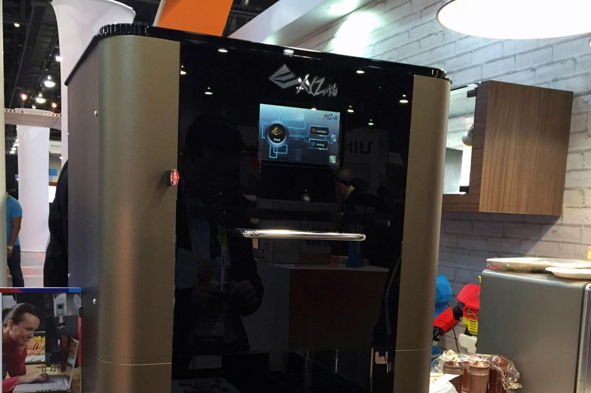

Star Trek’s replicator may not be here yet, but the dream of printing your own food has arrived at CES 2015, thanks to XYZprinting. The company’s 3D printers spit out fully formed objects, but banish any thought of the toy burgers or bananas you used to serve to your stuffed animals as a child (or was that just us?). This printer uses flour and chocolate to create intricately designed, albeit unbaked, cookies.
The three-chambered machine is currently limited to cookies and cake decorations, but the magic word was bandied about: pizza. One day the printer could squirt out sauce onto the dough, then layer on the cheese. Like the cookies, the pizza won’t be cooked, so you’ll still have to do that last step yourself. Because the output is limited to one item at a time, you’d get more bang for your buck out of pizza than a cookie. 
While you can’t just load any old substance into the chambers right now, the design options are extensive. Whether you download something from the Internet or upload your own creation, the printer can make some impressive cake accruements. At the demo, the food printer traced some pretty patterns out of chocolate onto bread. Reps at the demo said they envisioned small bakeries putting that function to good use for their baked goods.
XYZprinting also makes the da Vinci AiO, a 3D printer of the plastic-output variety. The food printer will be available for purchase later in 2015, though there’s no set price yet.
Article by Digital Trends